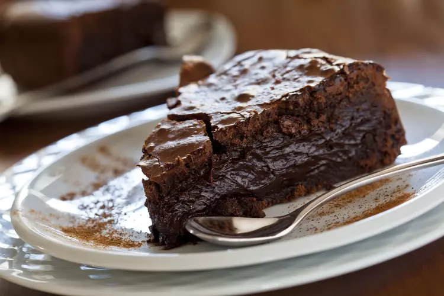

Recette
Gâteau chocolat
"Cette recette facile du gâteau chocolat est un grand classique.Elle fera plaisir aux plus gourmands."

| Difficulté | Préparation | Cuisson | Temps total |
|---|---|---|---|
| Facile | 10 min | 25 min | 35 min |
Ingrédients
200 g de chocolat noir à 52% de cacao
125 g de beurre doux (ou demi-sel pour les gourmands)
100 g de farine de blé T65
1 sachet de levure chimique ou poudre à lever (10 g)
4 gros oeufs bio
200 g de sucre en poudre (ou plutôt 150 g d'après les commentaires)
1 pincée de sel
Recette
1 |
Coupez le chocolat et le beurre en petits morceaux. Faites-les fondre en bain-marie jusqu’à avoir un mélange homogène. Retirez du feu. (J’évite le micro-ondes qui peut faire brûler le chocolat si la cuisson est mal maitrisée) |
2 |
Ajoutez la farine et la levure tamisées dans le chocolat fondu. |
3 |
Dans un saladier, fouettez les jaunes avec le sucre. Puis ajoutez la préparation au chocolat. |
4 |
Dans un autre saladier, battez les blancs d’oeufs en neige avec une pincée de sel. Incorporez-les délicatement dans la préparation au chocolat. |
5 |
Versez ce mélange dans un moule à manqué recouvert de papier sulfurisé (24 à 26 cm de diamètre). |
6 |
Faites cuire environ 20 à 25 min dans le four préchauffé à 180°C (chaleur tournante). Surveillez la fin de la cuisson en piquant le gâteau avec la lame d’un couteau : elle doit ressortir sèche. Laissez bien refroidir le gâteau au chocolat avant de démouler. |